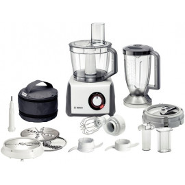

Virtuviniai kombainai | Virtuvinis kombainas internetu
2020.10.29 11:20

Visos kategorijos
Buitinė technikaBuitinė technika
ŠaldytuvaiŠaldytuvai
Šaldytuvai su šaldikliu apačioje Šaldytuvai su šaldikliu viršuje Šaldytuvai be šaldiklio Šaldytuvai Side-by-Side Vyno ir cigarų šaldytuvai Įmontuojami šaldytuvai ir šaldikliai Profesionali šaldymo ir brandinimo įranga Šaldikliai ir šaldymo dėžės Visi šaldytuvai Visi šaldytuvai ir šaldikliai Šaldymo įrangos priedai Nešiojami ir automobiliniai šaldytuvai Šaldikliai ir šaldymo dėžėsŠaldikliai ir šaldymo dėžės
Skalbimo mašinosSkalbimo mašinos
Skalbimo mašinos Skalbimo mašinos su džiovykle Džiovyklės Visos skalbimo mašinos ir džiovyklės Skalbimo mašinų priedai DžiovyklėsDžiovyklės
Džiovyklės Skalbyklės-džiovyklės ViryklėsViryklės
Elektrinės viryklės Dujinės viryklės su elektrine orkaite Dujinės viryklės su dujine orkaite Mini viryklės ir orkaitės Viryklių priedai OrkaitėsOrkaitės
KaitlentėsKaitlentės
Indukcinės kaitlentės Elektrinės kaitlentės Dujinės kaitlentės Kombinuotos ir Wok kaitlentės IndaplovėsIndaplovės
Indaplovės įmontuojamos Indaplovės laisvai pastatomos Visos indaplovės Indaplovių priedai GartraukiaiGartraukiai
Įmontuojami gartraukiai Gartraukiai tvirtinami prie sienos Gartraukiai tvirtinami prie lubų Gartraukiai pakabinami po spintele Gartraukių priedai Mikrobangų krosnelėsMikrobangų krosnelės
Mikrobangų krosnelės Mikrobangų krosnelių priedai Įmontuojama technikaĮmontuojama technika
Įmontuojami šaldytuvai Įmontuojamos indaplovės Įmontuojamos orkaitės Įmontuojamos kaitlentės Įmontuojami kavos aparatai Įmontuojamos mikrobangų krosnelės Įmontuojami gartraukiai Indų pašildymo stalčiai Smulki virtuvės technikaSmulki virtuvės technika
Kavos ir karštų gėrimų aparataiKavos ir karštų gėrimų aparatai
Kavos aparatai Kava Kavamalės Pieno plakikliai Arbatos aparatai Kavos aparatų priedai Maisto ruošimo ir smulkinimo technikaMaisto ruošimo ir smulkinimo technika
Sulčiaspaudės Virtuviniai kombainai Virtuvinių kombainų priedai Mėsmalės Pjaustyklės Blenderiai (trintuvai) Mikseriai (plakikliai) Kokteilinės Peilių galąstuvai Virtuvinės svarstyklės Ledų, ledukų, jogurto aparatai Virimo ir kepimo technikaVirimo ir kepimo technika
Virduliai Sumuštinių keptuvės Garų puodai Daugiafunkciniai puodai Elektriniai griliai Gruzdintuvės (fritiūrinės) Vaflinės, blynų ir spurgų keptuvės Skrudintuvai Spragėsių, cukraus vatos, smagaus maisto aparatai Duonkepės Mini orkaitės Mikrobangės krosnelės Mini viryklės Kiaušinių virtuvai Virtuvės ir stalo reikmenysVirtuvės ir stalo reikmenys
Keptuvės Puodai ir greitpuodžiai Virtuvės įrankiai Gertuvės, termosai, termo puodeliai Kita virtuvės technikaKita virtuvės technika
Vaisių džiovintuvai Termosai Vandens filtrai ir jonizatoriai Maisto atliekų smulkintuvai Vakuumatoriai ir vakuumavimo reikmenys Asmens ir namų priežiūraAsmens ir namų priežiūra
Valymo technikaValymo technika
Dulkių siurbliai Dulkių siurbliai robotai Dulkių siurbliai-šluotos Rankiniai dulkių siurbliai Dulkių siurblių priedai Langų valymo prietaisai Batų valymo mašinos Gariniai valytuvai Lygintuvai (laidynės)Lygintuvai (laidynės)
Lygintuvai Lyginimo sistemos Lyginimo lentos Siuvimo mašinosSiuvimo mašinos
Pūkų surinkėjaiPūkų surinkėjai
SvarstyklėsSvarstyklės
Klimato kontrolės technikaKlimato kontrolės technika
Šildytuvai ir radiatoriai Šildomos antklodės, kojų šildytuvai Rankų džiovintuvai Ventiliatoriai Kondicionieriai ir vėsintuvai Oro drėkintuvai Oro valytuvai (jonizatoriai) Oro sausintuvai (drėgmės surinkėjai) Orų stotelės (drėgmės matuokliai) Magnetinio lauko, radiacijos, nitratų matuokliai Klimato kontrolės prietaisų priedai Kūno priežiūros priemonėsKūno priežiūros priemonės
Barzdaskutės ir barzdakirpės Barzdaskučių priedai Epiliatoriai Nosies plaukų kirpimo mašinėlės Manikiūro ir pedikiūro priemonės Šildomos antklodės, kojų šildytuvai Dantų šepetėliai ir irigatoriai Kraujospūdžio matuokliai Plaukų priežiūros priemonėsPlaukų priežiūros priemonės
Plaukų džiovintuvai Plaukų džiovintuvų priedai Plaukų formavimo prietaisai Plaukų kirpimo mašinėlės Plaukų kirpimo mašinėlių priedai Šukos, šepečiai ir veidrodžiai Plaukų kirpimo žirklės, skustuvai Dantų šepetėliai ir irigatoriaiDantų šepetėliai ir irigatoriai
Dantų šepetėliai Tarpdančių irigatoriai Dantų šepetėlių antgaliai ir priedai Buitinė chemija, valymo priemonėsBuitinė chemija, valymo priemonės
Priešgaisrinė saugaPriešgaisrinė sauga
Dūmų, smalkių, dujų detektoriai Gesintuvai, nedegūs audeklai ir kt. Apsaugos sistemosApsaugos sistemos
Vaizdo stebėjimo kameros Vaizdo įrašymo įrenginiai Davikliai ir apsaugos sistemų priedai Sveikatos apsaugos priemonėsSveikatos apsaugos priemonės
Gyvūnų prekėsGyvūnų prekės
Kirpimo mašinėlės gyvūnams Gyvūnų reikmenys Vaizdo ir garso technikaVaizdo ir garso technika
TelevizoriaiTelevizoriai
Televizorių priedaiTelevizorių priedai
Televizorių laikikliai Skaitmeniniai TV imtuvai (priedėliai) SMART TV priedai Nuotolinio valdymo pultai TV antenos ir jų priedai Namų kino sistemosNamų kino sistemos
ProjektoriaiProjektoriai
Projektoriai Projektorių ekranai Projektorių laikikliai Media grotuvaiMedia grotuvai
Blu-Ray grotuvaiBlu-Ray grotuvai
DVD grotuvaiDVD grotuvai
Garso technikaGarso technika
Ausinės Kolonėlės Diktofonai Muzikiniai centrai Magnetolos Radijo imtuvai ir žadintuvai Patefonai MP3/MP4 grotuvai Namų kino sistema Auto aparatūraAuto aparatūra
Automagnetolos Automobiliniai garsiakalbiai Vaizdo registratoriai FM moduliatoriai Hi-Fi garso aparatūraHi-Fi garso aparatūra
Plokštelių grotuvai (patefonai) Hi-Fi garso kolonėlės Kabeliai ir adapteriaiKabeliai ir adapteriai
Vaizdo kabeliai USB kabeliai Tinklo kabeliai Adapteriai Laikikliai, stovai, staliukaiLaikikliai, stovai, staliukai
Televizorių laikikliai Projektorių laikikliai Kolonėlių laikikliai Visi laikikliai Kompiuterinė technikaKompiuterinė technika
KompiuteriaiKompiuteriai
Stacionarūs kompiuteriai Nešiojami kompiuteriai Planšetės Elektroninės skaityklės Nešiojami kompiuteriaiNešiojami kompiuteriai
Planšetiniai kompiuteriaiPlanšetiniai kompiuteriai
Knygų skaityklėsKnygų skaityklės
Stacionarūs kompiuteriaiStacionarūs kompiuteriai
MonitoriaiMonitoriai
Biuro technika ir reikmenysBiuro technika ir reikmenys
Spausdintuvai Daugiafunkciniai spausdintuvai Skeneriai Dokumentų naikikliai Spausdintuvų kasetės Popierius Kompiuterių aksesuaraiKompiuterių aksesuarai
Klaviatūros Pelės Kilimėliai Ausinės Kolonėlės Internetinės ir IP kameros Krepšiai, dėklai ir kuprinės Laidai Jungčių stotelės, stovai, aušintuvai Nepertraukiamo maitinimo šaltiniai (UPS) Išorinės baterijos (power bank) Nešiojamų kompiuterių įkrovikliai (pakrovėjai) Kortelių skaitytuvai, USB šakotuvai Tinklo įrangaTinklo įranga
Maršrutizatoriai Bevielio tinklo (Wi-Fi) adapteriai Komutatoriai Išorinės duomenų laikmenosIšorinės duomenų laikmenos
USB atmintinės Išoriniai kietieji diskai (HDD) Atminties kortelės CD/DVD/BD/MC laikmenos Programinė įrangaPrograminė įranga
Operacinės sistemos Antivirusinės programos Biuro programos Kompiuterių komponentaiKompiuterių komponentai
Maitinimo blokai (PSU) Vidiniai standieji diskai (HDD) SSD diskai ProjektoriaiProjektoriai
Projektoriai Projektorių ekranai Projektorių laikikliai PriedaiPriedai
Kabeliai ir adapteriaiKabeliai ir adapteriai
Vaizdo ir garso kabeliai LAN kabeliai USB kabeliai Adapteriai Elektros kabeliai, prailgintojai, adapteriai Spausdintuvų kasetėsSpausdintuvų kasetės
Originalūs toneriai Neoriginalūs toneriai Originalios rašalo kasetės Neoriginalios rašalo kasetės Fototechnika, vaizdo kamerosFototechnika, vaizdo kameros
FotoaparataiFotoaparatai
Kompaktiniai fotoaparatai Sisteminiai fotoaparatai Momentiniai fotoaparatai Vaizdo kameros ir registratoriaiVaizdo kameros ir registratoriai
Vaizdo kameros Veiksmo kameros Vaizdo registratoriai Foto ir video aksesuaraiFoto ir video aksesuarai
Fotoaparatų objektyvai ir jų priedai Fotoaparatų baterijos ir įkrovikliai Vaizdo kamerų baterijos ir įkrovikliai Dėklai, krepšiai fotoaparatams ir objektyvams LaikmenosLaikmenos
Atminties kortelės Video-audio juostos ir kitos laikmenos Baterijos, akumuliatoriai, įkrovikliaiBaterijos, akumuliatoriai, įkrovikliai
Baterijos USB įkrovikliai (pakrovėjai) Išorinės baterijos (power bank) Telefonai ir navigacijaTelefonai ir navigacija
Mobilieji telefonaiMobilieji telefonai
Išmanieji telefonai Mygtukiniai telefonai Fiksuoto ryšio telefonaiFiksuoto ryšio telefonai
Mobilių telefonų priedaiMobilių telefonų priedai
Laisvų rankų įranga Telefonų įkrovikliai Telefonų dėklai Telefonų laikikliai Ekrano apsauga Atminties kortelės Selfie lazdos Mobiliųjų telefonų kolonėlės Išorinės baterijos (power bank) Išmanieji laikrodžiai ir apyrankėsIšmanieji laikrodžiai ir apyrankės
GPS navigacijaGPS navigacija
GPS navigacija transportui Vaizdo registratoriai EcholotaiEcholotai
Laisvalaikis ir pramogosLaisvalaikis ir pramogos
Žaidimų kompiuterių priedaiŽaidimų kompiuterių priedai
Žaidimų kėdės ir stalai Dronai/RobotaiDronai/Robotai
Žvejybos reikmenysŽvejybos reikmenys
PaspirtukaiPaspirtukai
TurizmasTurizmas
Miegmaišiai Palapinės Išmanieji laikrodžiaiIšmanieji laikrodžiai
Išmanioji sodininkystėIšmanioji sodininkystė
Hamakai ir pakabinami krėslaiHamakai ir pakabinami krėslai
Gyvūnų prekėsGyvūnų prekės
Sporto prekėsSporto prekės
Miele parduotuvėMiele parduotuvė
Vertinimas 4.6 iš 5 | Viso 1221 Pagalba 8 700 80055 Vertinimas 4.6 iš 5 | Viso 1222 Prisijungti Buitinė technika Smulki virtuvės technika Asmens ir namų priežiūra Vaizdo ir garso technika Kompiuterinė technika Fototechnika, vaizdo kameros Telefonai ir navigacija Laisvalaikis ir pramogos Parduotuvė Šaldytuvai Šaldytuvai su šaldikliu apačioje Šaldytuvai su šaldikliu viršuje Šaldytuvai be šaldiklio Šaldytuvai Side-by-Side Vyno ir cigarų šaldytuvai Įmontuojami šaldytuvai ir šaldikliai Profesionali šaldymo ir brandinimo įranga Šaldikliai ir šaldymo dėžės Visi šaldytuvai Visi šaldytuvai ir šaldikliai Šaldymo įrangos priedai Nešiojami ir automobiliniai šaldytuvai Šaldikliai ir šaldymo dėžės Skalbimo mašinos Skalbimo mašinos Skalbimo mašinos su džiovykle Džiovyklės Visos skalbimo mašinos ir džiovyklės Skalbimo mašinų priedai Džiovyklės Džiovyklės Skalbyklės-džiovyklės Viryklės Elektrinės viryklės Dujinės viryklės su elektrine orkaite Dujinės viryklės su dujine orkaite Mini viryklės ir orkaitės Viryklių priedai Orkaitės Kaitlentės Indukcinės kaitlentės Elektrinės kaitlentės Dujinės kaitlentės Kombinuotos ir Wok kaitlentės Indaplovės Indaplovės įmontuojamos Indaplovės laisvai pastatomos Visos indaplovės Indaplovių priedai Gartraukiai Įmontuojami gartraukiai Gartraukiai tvirtinami prie sienos Gartraukiai tvirtinami prie lubų Gartraukiai pakabinami po spintele Gartraukių priedai Mikrobangų krosnelės Mikrobangų krosnelės Mikrobangų krosnelių priedai Įmontuojama technika Įmontuojami šaldytuvai Įmontuojamos indaplovės Įmontuojamos orkaitės Įmontuojamos kaitlentės Įmontuojami kavos aparatai Įmontuojamos mikrobangų krosnelės Įmontuojami gartraukiai Indų pašildymo stalčiai Kavos ir karštų gėrimų aparatai Kavos aparatai Kava Kavamalės Pieno plakikliai Arbatos aparatai Kavos aparatų priedai Maisto ruošimo ir smulkinimo technika Sulčiaspaudės Virtuviniai kombainai Virtuvinių kombainų priedai Mėsmalės Pjaustyklės Blenderiai (trintuvai) Mikseriai (plakikliai) Kokteilinės Peilių galąstuvai Virtuvinės svarstyklės Ledų, ledukų, jogurto aparatai Virimo ir kepimo technika Virduliai Sumuštinių keptuvės Garų puodai Daugiafunkciniai puodai Elektriniai griliai Gruzdintuvės (fritiūrinės) Vaflinės, blynų ir spurgų keptuvės Skrudintuvai Spragėsių, cukraus vatos, smagaus maisto aparatai Duonkepės Mini orkaitės Mikrobangės krosnelės Mini viryklės Kiaušinių virtuvai Virtuvės ir stalo reikmenys Keptuvės Puodai ir greitpuodžiai Virtuvės įrankiai Gertuvės, termosai, termo puodeliai Kita virtuvės technika Vaisių džiovintuvai Termosai Vandens filtrai ir jonizatoriai Maisto atliekų smulkintuvai Vakuumatoriai ir vakuumavimo reikmenys Valymo technika Dulkių siurbliai Dulkių siurbliai robotai Dulkių siurbliai-šluotos Rankiniai dulkių siurbliai Dulkių siurblių priedai Langų valymo prietaisai Batų valymo mašinos Gariniai valytuvai Lygintuvai (laidynės) Lygintuvai Lyginimo sistemos Lyginimo lentos Siuvimo mašinos Pūkų surinkėjai Svarstyklės Klimato kontrolės technika Šildytuvai ir radiatoriai Šildomos antklodės, kojų šildytuvai Rankų džiovintuvai Ventiliatoriai Kondicionieriai ir vėsintuvai Oro drėkintuvai Oro valytuvai (jonizatoriai) Oro sausintuvai (drėgmės surinkėjai) Orų stotelės (drėgmės matuokliai) Magnetinio lauko, radiacijos, nitratų matuokliai Klimato kontrolės prietaisų priedai Kūno priežiūros priemonės Barzdaskutės ir barzdakirpės Barzdaskučių priedai Epiliatoriai Nosies plaukų kirpimo mašinėlės Manikiūro ir pedikiūro priemonės Šildomos antklodės, kojų šildytuvai Dantų šepetėliai ir irigatoriai Kraujospūdžio matuokliai Plaukų priežiūros priemonės Plaukų džiovintuvai Plaukų džiovintuvų priedai Plaukų formavimo prietaisai Plaukų kirpimo mašinėlės Plaukų kirpimo mašinėlių priedai Šukos, šepečiai ir veidrodžiai Plaukų kirpimo žirklės, skustuvai Dantų šepetėliai ir irigatoriai Dantų šepetėliai Tarpdančių irigatoriai Dantų šepetėlių antgaliai ir priedai Buitinė chemija, valymo priemonės Priešgaisrinė sauga Dūmų, smalkių, dujų detektoriai Gesintuvai, nedegūs audeklai ir kt. Apsaugos sistemos Vaizdo stebėjimo kameros Vaizdo įrašymo įrenginiai Davikliai ir apsaugos sistemų priedai Sveikatos apsaugos priemonės Gyvūnų prekės Kirpimo mašinėlės gyvūnams Gyvūnų reikmenys Televizoriai Televizorių priedai Televizorių laikikliai Skaitmeniniai TV imtuvai (priedėliai) SMART TV priedai Nuotolinio valdymo pultai TV antenos ir jų priedai Namų kino sistemos Projektoriai Projektoriai Projektorių ekranai Projektorių laikikliai Media grotuvai Blu-Ray grotuvai DVD grotuvai Garso technika Ausinės Kolonėlės Diktofonai Muzikiniai centrai Magnetolos Radijo imtuvai ir žadintuvai Patefonai MP3/MP4 grotuvai Namų kino sistema Auto aparatūra Automagnetolos Automobiliniai garsiakalbiai Vaizdo registratoriai FM moduliatoriai Hi-Fi garso aparatūra Plokštelių grotuvai (patefonai) Hi-Fi garso kolonėlės Kabeliai ir adapteriai Vaizdo kabeliai USB kabeliai Tinklo kabeliai Adapteriai Laikikliai, stovai, staliukai Televizorių laikikliai Projektorių laikikliai Kolonėlių laikikliai Visi laikikliai Kompiuteriai Stacionarūs kompiuteriai Nešiojami kompiuteriai Planšetės Elektroninės skaityklės Nešiojami kompiuteriai Planšetiniai kompiuteriai Knygų skaityklės Stacionarūs kompiuteriai Monitoriai Biuro technika ir reikmenys Spausdintuvai Daugiafunkciniai spausdintuvai Skeneriai Dokumentų naikikliai Spausdintuvų kasetės Popierius Kompiuterių aksesuarai Klaviatūros Pelės Kilimėliai Ausinės Kolonėlės Internetinės ir IP kameros Krepšiai, dėklai ir kuprinės Laidai Jungčių stotelės, stovai, aušintuvai Nepertraukiamo maitinimo šaltiniai (UPS) Išorinės baterijos (power bank) Nešiojamų kompiuterių įkrovikliai (pakrovėjai) Kortelių skaitytuvai, USB šakotuvai Tinklo įranga Maršrutizatoriai Bevielio tinklo (Wi-Fi) adapteriai Komutatoriai Išorinės duomenų laikmenos USB atmintinės Išoriniai kietieji diskai (HDD) Atminties kortelės CD/DVD/BD/MC laikmenos Programinė įranga Operacinės sistemos Antivirusinės programos Biuro programos Kompiuterių komponentai Maitinimo blokai (PSU) Vidiniai standieji diskai (HDD) SSD diskai Projektoriai Projektoriai Projektorių ekranai Projektorių laikikliai Priedai Kabeliai ir adapteriai Vaizdo ir garso kabeliai LAN kabeliai USB kabeliai Adapteriai Elektros kabeliai, prailgintojai, adapteriai Spausdintuvų kasetės Originalūs toneriai Neoriginalūs toneriai Originalios rašalo kasetės Neoriginalios rašalo kasetės Fotoaparatai Kompaktiniai fotoaparatai Sisteminiai fotoaparatai Momentiniai fotoaparatai Vaizdo kameros ir registratoriai Vaizdo kameros Veiksmo kameros Vaizdo registratoriai Foto ir video aksesuarai Fotoaparatų objektyvai ir jų priedai Fotoaparatų baterijos ir įkrovikliai Vaizdo kamerų baterijos ir įkrovikliai Dėklai, krepšiai fotoaparatams ir objektyvams Laikmenos Atminties kortelės Video-audio juostos ir kitos laikmenos Baterijos, akumuliatoriai, įkrovikliai Baterijos USB įkrovikliai (pakrovėjai) Išorinės baterijos (power bank) Mobilieji telefonai Išmanieji telefonai Mygtukiniai telefonai Fiksuoto ryšio telefonai Mobilių telefonų priedai Laisvų rankų įranga Telefonų įkrovikliai Telefonų dėklai Telefonų laikikliai Ekrano apsauga Atminties kortelės Selfie lazdos Mobiliųjų telefonų kolonėlės Išorinės baterijos (power bank) Išmanieji laikrodžiai ir apyrankės GPS navigacija GPS navigacija transportui Vaizdo registratoriai Echolotai Žaidimų kompiuterių priedai Žaidimų kėdės ir stalai Dronai/Robotai Žvejybos reikmenys Paspirtukai Turizmas Miegmaišiai Palapinės Išmanieji laikrodžiai Išmanioji sodininkystė Hamakai ir pakabinami krėslai Gyvūnų prekės Sporto prekės 2 Ogmina Smulki virtuvės technika Maisto ruošimo ir smulkinimo technika Virtuviniai kombainaiVirtuviniai kombainai
Virtuvinis kombainas – pagalbininkas kiekvienoje virtuvėje. Pjaustyklė, plaktuvas, mikseris, net sulčiaspaudė telpa viename prietaise. Tam, kad nebereikėtų dešimties kitų virtuvės technikos elementų, maisto smulkinimo ir maišymo darbus patikėkite virtuviniam kombainui.
Prekių filtravimas Kaina 65.98999786377 € 1099 € Gamintojas Valyti visus filtrus BETM (2) BOSCH (1)- Virtuviniai kombainai internetu | pigu.lt
- Virtuviniai kombainai | Universalus virtuvinis kombainas ...
- Virtuviniai kombainai - avitela.lt
- Virtuviniai kombainai internetu – TECHNORAMA
- Virtuviniai kombainai smulki buitinė technika - Skelbiu.lt
- Virtuviniai kombainai | akcija parduotuvėje RDE.LT
- Daugiafunkciniai, galingi VIRTUVINIAI KOMBAINAI Žema kaina ...
- Virtuviniai kombainai pigiau, platus pasirinkimas ir ...
- Virtuviniai kombainai | Virtuvinis kombainas internetu
- Virtuviniai kombainai | ZEMAKAINA.LT
- Virtuviniai kombainai internetu | pigu.lt
Virtuviniai kombainai Virtuvinis kombainas – pagalbininkas kiekvienoje virtuvėje. Pjaustyklė, plaktuvas, mikseris, net sulčiaspaudė telpa viename prietaise. Tam, kad nebereikėtų dešimties kitų virtuvės technikos elementų, maisto smulkinimo ir maišymo darbus patikėkite virtuviniam kombainui.
- Virtuviniai kombainai | Universalus virtuvinis kombainas ...
Šie prietaisai yra vieni funkcionaliausių – virtuviniai kombainai nustebins galimybių gausa, padės sutaupyti vietos ir sumažins svarbiausiems prietaisams skiriamas išlaidas. Pas mus Jūsų laukia įvairiems kulinariniams eksperimentams pritaikyti virtuvės kombainai – užsukite ir suraskite sau tinkamiausią!
- Virtuviniai kombainai - avitela.lt
Virtuviniai kombainai. Prekių puslapyje. 12 12 24 36 48 Prekių filtras Rikiuoti pagal: Rikiuoti Kaina, nuo žemiausios. Nuo A iki Z Nuo Z iki A Kaina, nuo žemiausios Kaina, nuo aukščiausios Rikiuoti pagal: Rikiuoti Kaina, nuo žemiausios.
- Virtuviniai kombainai internetu – TECHNORAMA
Virtuviniai kombainai internetu: nemokamas pristatymas per 1-2 d.d. prekių grąžinimas per 14 d. 100% saugus pirkimas. Tel.: 8 700 88770
- Virtuviniai kombainai smulki buitinė technika - Skelbiu.lt
Paprastai apvalūs virtuviniai kombainai yra aukštesni, todėl gali netilpti į spintelę, tačiau daugiau skirtumų nėra – tiek vieni, tiek kiti kombainai jūsų maistą smulkins vienodai gerai. Funkcionalumas. Toli gražu ne su visais virtuviniais kombainais galima malti mėsą, trinti bulves, spausti sultis ir minkyti tešlą. Todėl ...
- Virtuviniai kombainai | akcija parduotuvėje RDE.LT
Virtuviniai kombainai – tai trintuvė, tarka, plaktuvas, sulčiaspaudė ir dar daug kitų prietaisų viename, tad kaip išsirinkti tinkamiausią ir labiausiai jūsų lūkesčius atitiksiantį kombainą? Pagrindiniai dalykai, į kuriuos derėtų atkreipti dėmesį – tai prietaiso sudėtinės dalys, dubens dydis, galingumas, greitis ir ...
- Daugiafunkciniai, galingi VIRTUVINIAI KOMBAINAI Žema kaina ...
Virtuviniai kombainai internetinėje parduotuvėje pigiau! Didelis Virtuvinių kombainų pasirinkimas. Galimybė pasinaudoti lizingo akcija. Interneto svetainė naudoja slapukus (angl. cookies), kad rinktų statistinę informaciją apie lankytojus ir sektų jų veiksmus tiesioginės rinkodaros vykdymo tikslais. Jei sutinkate, paspauskite ...
- Virtuviniai kombainai pigiau, platus pasirinkimas ir ...
Virtuviniai kombainai. Gamintojų Bosch, Kenwood, Philips virtuviniai kombainai. Akcija internetinėje parduotuvėje RDE.LT.
- Virtuviniai kombainai | Virtuvinis kombainas internetu
Virtuviniai kombainai Filtruoti (0) Rodoma: 1 - 48 iš 67. Rūšiuoti pagal: „Draugų rato“ nariams. Norite geresnės kainos - tapkite „Draugų rato“ nariu Tapti nariu-22%. 62,00 € / vnt. 79,00 € / vnt. Turime sandėlyje ...
- Virtuviniai kombainai | ZEMAKAINA.LT
Kiekvienas, kuris savo namų virtuvėje turi virtuvinį kombainą, neabejotinai patvirtins, jog virtuviniai kombainai – nepamainomi prietaisai gaminant pačius įvairiausius patiekalus: apkepus, troškinius, pyragus, sriubas ir kt. Jei virtuvinio kombaino dar neturite, nė nedvejokite, kad tai bus viena geriausių investicijų – netruksite įsitikinti, kiek daug galimybių sukantis ...
Virtuviniai kombainai Virtuvinis kombainas – pagalbininkas kiekvienoje virtuvėje. Pjaustyklė, plaktuvas, mikseris, net sulčiaspaudė telpa viename prietaise. Tam, kad nebereikėtų dešimties kitų virtuvės technikos elementų, maisto smulkinimo ir maišymo darbus patikėkite virtuviniam kombainui.
Šie prietaisai yra vieni funkcionaliausių – virtuviniai kombainai nustebins galimybių gausa, padės sutaupyti vietos ir sumažins svarbiausiems prietaisams skiriamas išlaidas. Pas mus Jūsų laukia įvairiems kulinariniams eksperimentams pritaikyti virtuvės kombainai – užsukite ir suraskite sau tinkamiausią!
Virtuviniai kombainai. Prekių puslapyje. 12 12 24 36 48 Prekių filtras Rikiuoti pagal: Rikiuoti Kaina, nuo žemiausios. Nuo A iki Z Nuo Z iki A Kaina, nuo žemiausios Kaina, nuo aukščiausios Rikiuoti pagal: Rikiuoti Kaina, nuo žemiausios.
Virtuviniai kombainai internetu: nemokamas pristatymas per 1-2 d.d. prekių grąžinimas per 14 d. 100% saugus pirkimas. Tel.: 8 700 88770
Paprastai apvalūs virtuviniai kombainai yra aukštesni, todėl gali netilpti į spintelę, tačiau daugiau skirtumų nėra – tiek vieni, tiek kiti kombainai jūsų maistą smulkins vienodai gerai. Funkcionalumas. Toli gražu ne su visais virtuviniais kombainais galima malti mėsą, trinti bulves, spausti sultis ir minkyti tešlą. Todėl ...
Virtuviniai kombainai – tai trintuvė, tarka, plaktuvas, sulčiaspaudė ir dar daug kitų prietaisų viename, tad kaip išsirinkti tinkamiausią ir labiausiai jūsų lūkesčius atitiksiantį kombainą? Pagrindiniai dalykai, į kuriuos derėtų atkreipti dėmesį – tai prietaiso sudėtinės dalys, dubens dydis, galingumas, greitis ir ...
Virtuviniai kombainai internetinėje parduotuvėje pigiau! Didelis Virtuvinių kombainų pasirinkimas. Galimybė pasinaudoti lizingo akcija. Interneto svetainė naudoja slapukus (angl. cookies), kad rinktų statistinę informaciją apie lankytojus ir sektų jų veiksmus tiesioginės rinkodaros vykdymo tikslais. Jei sutinkate, paspauskite ...
Virtuviniai kombainai. Gamintojų Bosch, Kenwood, Philips virtuviniai kombainai. Akcija internetinėje parduotuvėje RDE.LT.
Virtuviniai kombainai Filtruoti (0) Rodoma: 1 - 48 iš 67. Rūšiuoti pagal: „Draugų rato“ nariams. Norite geresnės kainos - tapkite „Draugų rato“ nariu Tapti nariu-22%. 62,00 € / vnt. 79,00 € / vnt. Turime sandėlyje ...
Kiekvienas, kuris savo namų virtuvėje turi virtuvinį kombainą, neabejotinai patvirtins, jog virtuviniai kombainai – nepamainomi prietaisai gaminant pačius įvairiausius patiekalus: apkepus, troškinius, pyragus, sriubas ir kt. Jei virtuvinio kombaino dar neturite, nė nedvejokite, kad tai bus viena geriausių investicijų – netruksite įsitikinti, kiek daug galimybių sukantis ...
